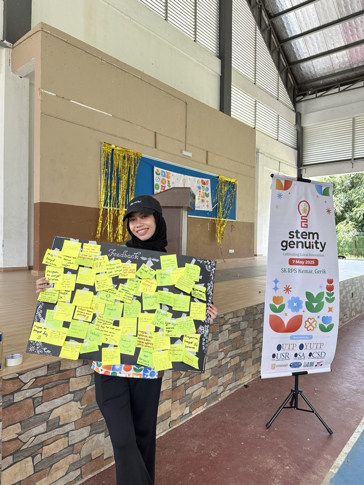

COMMUNITY ENGAGEMENT
STEMgenuity: Cultivating Local Innovation
A UTP community engagement initiative designed to provide Orang Asli students with greater exposure to STEM through practical learning, interactive activities and educational engagement.

THE PROGRAMME
About STEMgenuity
STEMgenuity: Cultivating Local Innovation was conducted on 7 May 2025 at SK RPS Pos Kemar, Gerik, Perak .
The programme was designed to introduce and strengthen STEM exposure among Orang Asli students through hands-on learning activities, interactive workshops and educational sharing sessions.
The initiative aimed to encourage greater interest in Science, Technology, Engineering and Mathematics while helping students develop problem-solving skills and increasing their awareness of higher-education and STEM career pathways.
MY ROLE
Secretary I
I served as Secretary I as part of the UTP organising committee for STEMgenuity.
The experience provided practical exposure to working within a structured organising team while contributing to a university-led community engagement initiative.
Working alongside different departments within the committee strengthened my teamwork, communication, organisation and ability to contribute effectively toward a shared programme objective.
PROGRAMME IMPACT
Community engagement at a glance
60 Students
The programme was designed to benefit approximately 60 Form 1 to Form 3 students from SK Pos Kemar.
20 UTP Committee Members
The programme was organised by a 20-member student committee from Universiti Teknologi PETRONAS.
SDG 4
The initiative supported Sustainable Development Goal 4: Quality Education.
STEM Exposure
Students participated in practical STEM activities designed to encourage curiosity, creativity and problem-solving.
PROGRAMME MODULES
Hands-on learning activities
Smart Irrigation System
Introduced students to practical technology applications in agriculture.
Water Filtration System
Provided practical exposure to science and environmental concepts.
Spaghetti Tower Challenge
Encouraged teamwork, structural thinking and creative problem-solving.
Smart Parking Simulation
Demonstrated how technology can be applied to solve everyday problems.
Science Experiments
Included interactive activities such as the Elephant Toothpaste experiment.
Balloon-Powered Car
Introduced practical concepts involving motion, energy and engineering design.
EXPERIENCE GAINED
What I learned
- Working effectively within a multi-department organising committee.
- Supporting the execution of a community engagement programme.
- Communicating and collaborating with different team members.
- Contributing to an educational programme with measurable community impact.
- Understanding the importance of inclusive access to STEM education.
Community, Education & Impact
STEMgenuity gave me the opportunity to contribute beyond the classroom while supporting greater STEM exposure for students from the Orang Asli community.